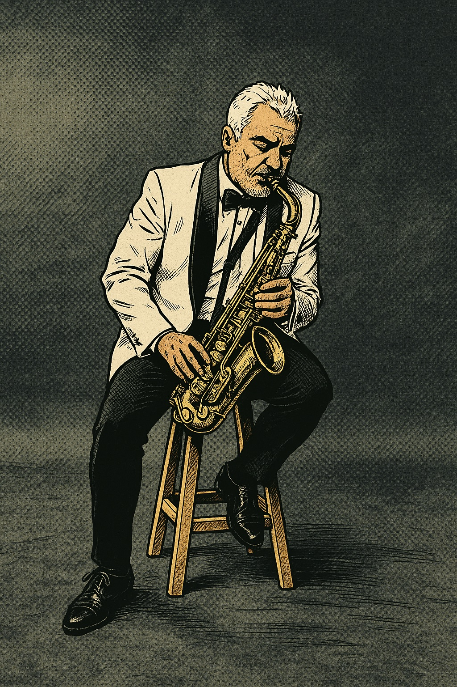

Aprender
La curiosidad abre puertas que todavía no sabemos nombrar.
Explorando lo que viene
Soy Eduardo ArJi. Aprendo, experimento y comparto en la intersección entre la inteligencia artificial, la tecnología y la música.

La creatividad también
se entrena.
Me mueve entender cómo funcionan las cosas y convertir ese conocimiento en algo útil. Estoy construyendo una relación práctica con la inteligencia artificial: no solo usarla, sino aprender a pensar y crear mejor con ella.
La música aporta la otra mitad: escucha, improvisación y constancia. Este sitio es mi espacio para documentar el camino, conectar ideas y compartir lo aprendido.
La curiosidad abre puertas que todavía no sabemos nombrar.
Las ideas adquieren valor cuando se convierten en algo real.
El conocimiento crece cuando circula y conecta a las personas.
03 / Proyectos e intereses
Exploración activa
Herramientas, agentes y nuevas formas de colaborar con máquinas.
Construir para aprender
Pequeños proyectos que convierten preguntas en experiencias.
Disciplina creativa
Improvisación, sensibilidad y el placer de seguir practicando.
Siempre en beta
Ideas, libros y experimentos para ampliar la manera de pensar.
04 / Contacto
La conversación empieza aquí
Si compartimos curiosidad por la tecnología, la IA o la música, hablemos.